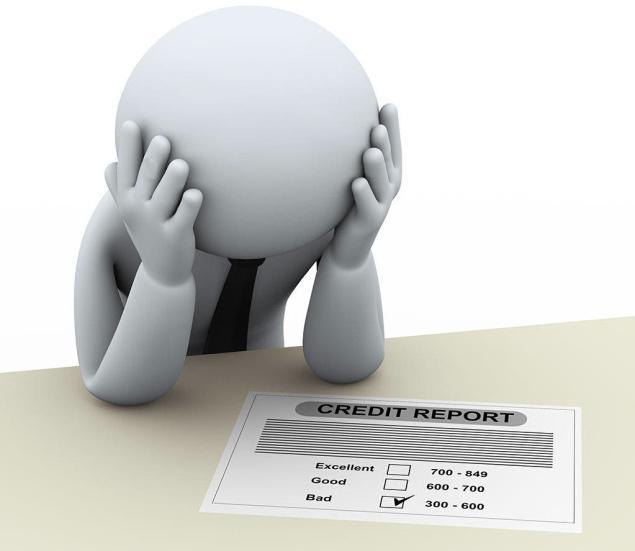

A Non-performing asset (NPA) is defined as a credit facility in respect of which the interest and/or installment of Bond finance principal has remained ‘past due’ for a specified period of time. NPA is used by financial institutions that refer to loans that are in jeopardy of default the so called NPL. Once the borrower has failed to make interest or principal payments for 90 days the loan is considered to be a non-performing asset. Non-performing assets are problematic for financial institutions since they depend on interest payments for income. Troublesome pressure from the economy can lead to a sharp increase in NPLs and often results in massive write-downs.
With a view to moving towards international best practices and to ensure greater transparency, it has been decided to adopt the ‘90 days’ overdue’ norm for identification of NPA, from the year ending March 31, 2004. Accordingly, with effect from March 31, 2004, a non-performing asset (NPA)is a loan or an advance where;
Interest and/or installment of principal remain overdue for a period of more than 91 days in respect of a term loan, The account remains ‘out of order’ for a period of more than 90 days, in respect of an Overdraft/Cash Credit (OD/CC), The bill remains overdue for a period of more than 90 days in the case of bills purchased and discounted, Interest and/or installment of principal remains overdue for two harvest seasons but for a period not exceeding two half years in the case of an advance granted for agricultural purposes, and Any amount to be received remains overdue for a period of more than 90 days in respect of other accounts. Non submission of Stock Statements for 3 Continuous Quarters in case of Cash Credit Facility. No active transactions in the account (Cash Credit/Over Draft/EPC/PCFC) for more than 91days Further classify non-performing assets further into the following three categories based on the period for which the asset has remained non-performing and the realisability of the dues:
 Sub-standard assets: a sub standard asset is one which has been classified as NPA for a period not exceeding 12 months. Doubtful Assets: a doubtful asset is one which has remained NPA for a period exceeding 12 months. Loss assets: where loss has been identified by the bank, internal or external auditor or central bank inspectors. But the amount has not been written off, wholly or partly. Sub-standard asset is the asset in which bank have to maintain 15% of its reserves. All those assets which are considered as non-performing for period of more than 12 months are called as Doubtful Assets. All those assets which cannot be recovered are called as Loss Assets. Some advanced tools like Experian India's "Hunter Fraud Score" have also been launched that work on data mining and calculate some authentic score that can help banks detect fraud and lower their losses.[2]
Reasons for Occurrence of NPAs NPAs result from what are termed “Bad Loans” or NPL. Default, in the financial parlance, is the failure to meet financial obligations, say non-payment of a loan installment. These loans can occur due to the following reasons:
Usual banking operations /Bad lending practices A banking crisis (as happened in USA, South Asia and Japan) Overhang component (due to environmental reasons, natural calamities,business cycle,Disease Occurrence,etc...) Incremental component (due to internal bank management, like credit policy, terms of credit, etc...) The Problems caused by NPAs NPAs do not just reflect badly in a bank’s account books, they adversely impact the national economy. Following are some of the repercussions of NPAs: Depositors do not get rightful returns and many times may lose uninsured deposits. Banks may begin charging higher interest rates on some products to compensate NPL losses Bank shareholders are adversely affected Bad loans imply redirecting of funds from good projects to bad ones. Hence, the economy suffers due to loss of good projects and failure of bad investments. When bank do not get loan repayment or interest payments, liquidity problems may ensue.